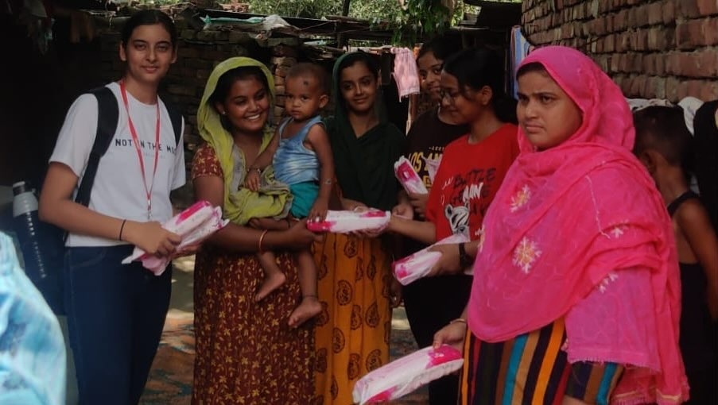

We provide access to educational resources, practical training, and digital literacy programs that help individuals develop skills for the modern world.

Through guidance, mentorship, and confidence-building initiatives, we encourage young people to discover their strengths and become future leaders.

We support community-driven projects that promote awareness, collaboration, and positive social change, creating opportunities for people to make a difference where they live.
She Can Foundation is a youth-focused non-profit organization committed to creating opportunities for women and young people through education, skill development, and community engagement. We believe that every individual deserves access to the resources, guidance, and support needed to reach their full potential. By collaborating with volunteers, educators, and local communities, we work to build a future where confidence, independence, and equal opportunities are accessible to all.
To empower individuals through education, awareness, and meaningful opportunities that foster personal growth, social impact, and long-term community development.
To create an inclusive society where every woman and young person has the confidence, knowledge, and support needed to thrive and contribute positively to the world.